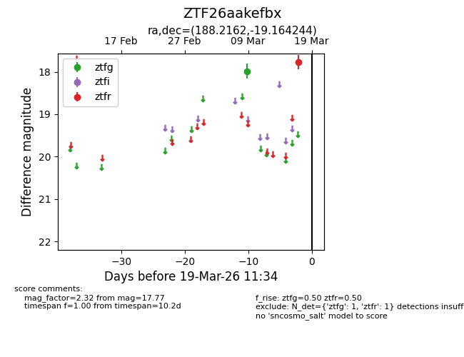
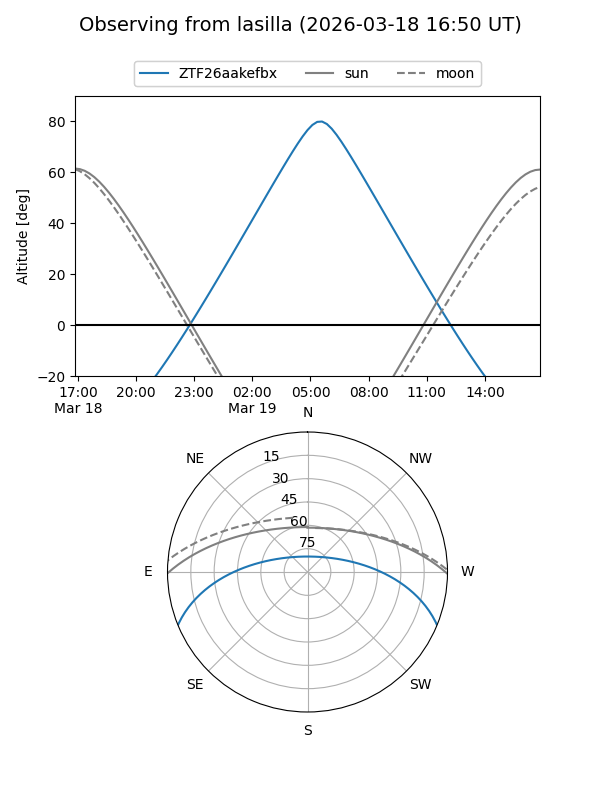
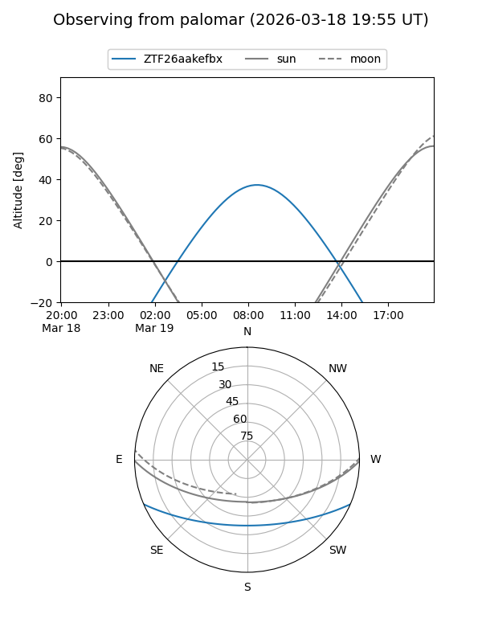

ZTF26aakefbx
Target ZTF26aakefbx at 2026-03-19 11:36
Aliases and brokers:
FINK: link
Lasair: link
ALeRCE: link
alt names
ZTF26aakefbx (ztf,fink_ztf)
Coordinates:
equatorial (ra, dec) = 188.2162,-19.16424
equatorial (HMS+DMS) = 12:32:51.88,-19:09:51.28
galactic (l, b) = (296.8819,+43.48921)
Flags:
Photometry:
last ztfg=17.98, ztfr=17.77
1 ztfg, 1 ztfr detections
Lightcurve

Visibility


Additional plots